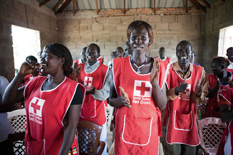

Insight One: Investing in DM capacity-building led to improved NS response, and partners should be called on to support with this

Next insight
What's the evidence?
Resources:
PER: https://media.ifrc.org/ifrc/what-we-do-disaster-and-crisis-national-society-preparedness-effective-response/
Safer Access: http://saferaccess.icrc.org/
Home